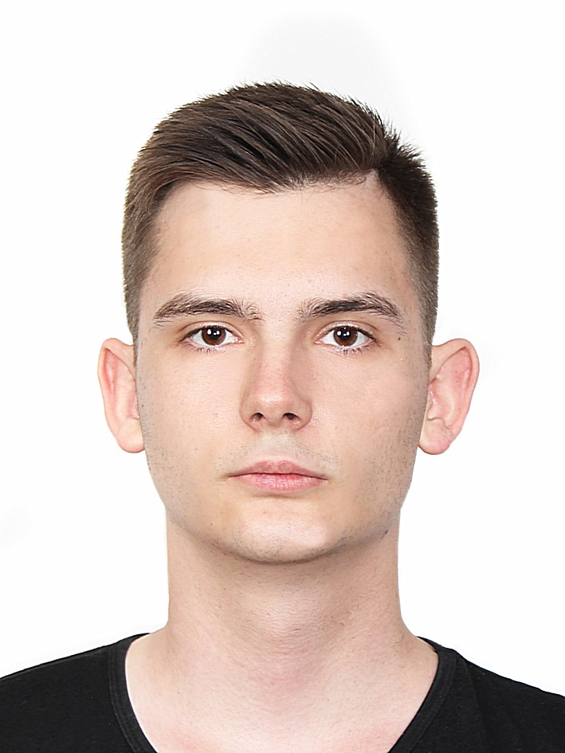
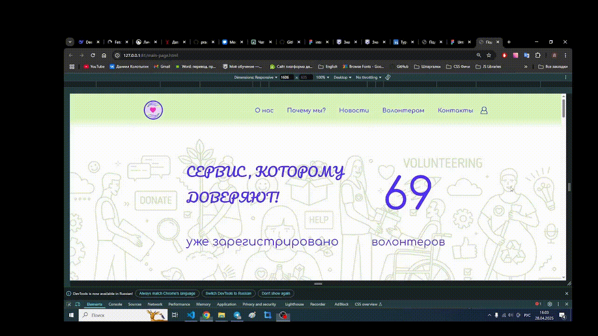

Наша команда
Над проектом работает команда студентов Московского Политехнического Университета.

Колотыгин Д.А.
Разработка фронтенда
HTML5
CSS3
JavaScript
Адаптивный дизайн
Мой вклад в проект
Разработка мобильных интерфейсов и обеспечение безупречного пользовательского опыта
Ключевые достижения:
- Создание адаптивной мобильной версии главной страницы
- Разработка интерактивного интерфейса личного кабинета волонтера
Особенности реализации:
При разработке мобильной версии я уделил особое внимание:
- Созданию интуитивно понятного интерфейса с крупными элементами управления
Моя работа позволила сделать платформу действительно доступной для всех категорий пользователей, независимо от их физических возможностей и используемых устройств.
Все участники проекта:
- Ахматов А. Р.
- Вожаков М. А.
- Горохов Е. А.
- Дьяченко А. С.
- Ермаков М. А.
- Захарова К. И.
- Злобина Д. А.
- Колотыгин Д. А.
- Красноперов С. А.
- Меркулов Г. С.
- Найдухов А. М.
- Неклюдов В. А.
- Осташев А. И.
- Паладий М. Ю.
- Прудников П. И.
- Реброва А. А.
- Саидмахмудов С. С. У.
- Филиппов Д. О.
- Фролова К. М.
- Цапко А. В.
- Чубаров М. Д.
- Якунин К. Д.